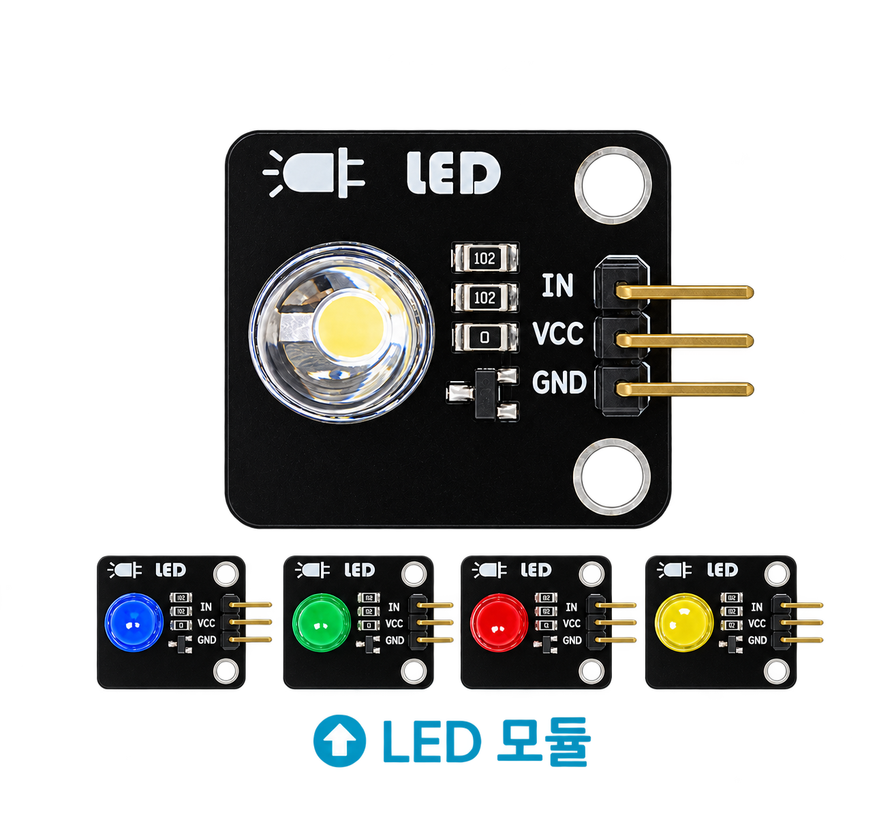
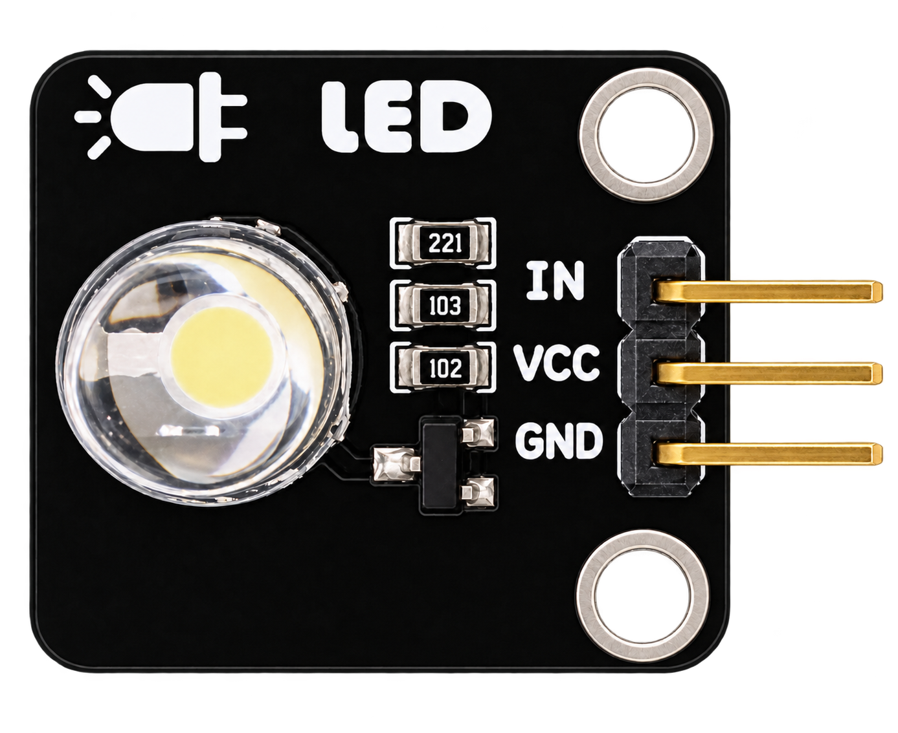
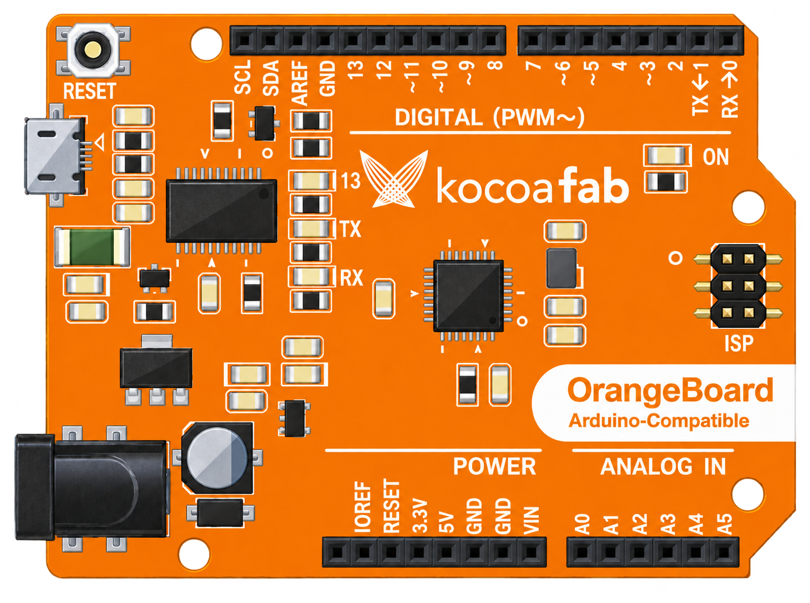

LED
(Light Emitting Diode, 발광 전류를 한쪽 방향으로만 흐르게 하는 반도체 소자다이오드)는 전류가 흐르면 빛을 내는 반도체 소자.

신호등진행 상태 표시
브레이크등멈춤 상태 표시
전원 표시등전원 상태 표시
전광판문자와 그림 표시
2. LED 회로 연결


3. 엔트리 코드 블록 만들기
entry[피컴09] 출력장치-LED1장면 1 · 엔트리
엔트리봇
블록 0개
▶시작하기 버튼을 클릭했을 때
디지털13▼번 핀켜기▼
계속 반복하기
디지털3▼번 핀켜기▼
0.2초 기다리기
디지털3▼번 핀끄기▼
0.2초 기다리기
디지털3▼번 핀을255(으)로 정하기
0.2초 기다리기
디지털3▼번 핀을0(으)로 정하기
0.2초 기다리기
다음 블록을 눌러 시작하세요.
블록이 추가될 때 왼쪽에서 해당 블록의 탭이 함께 강조됩니다.
0 / 11
실행 결과
LED가 0.2초 간격으로 깜빡입니다.
실행 결과
오렌지보드의 13번 핀이 켜졌습니다.
실행 결과
LED가 켜졌습니다.
4. 디지털 출력 블록 비교
entry[피컴09] 출력장치-LED1장면 1 · 엔트리
엔트리봇블록 비교
디지털3▼번 핀켜기▼
012345678910111213
디지털3▼번 핀을255(으)로 정하기
35691011
PWM 사용 가능 핀
~3~5~6
~9~10~11
3, 5, 6, 9, 10, 11번 핀 옆에는 ~ 표시가 있습니다.
5. 한 걸음 더: 깜빡임의 마술, PWM
PWM은 디지털 신호를 아주 빠르게 켰다 껐다 하면서 켜져 있는 시간의 비율을 조절하는 방법입니다. PWM 기능을 지원하는 디지털 핀은 이렇게 ON/OFF 시간을 조절하여 아날로그 출력과 비슷한 효과를 만들 수 있습니다.
엔트리 설정값0→켜져 있는 시간0%
켜는 시간 1 : 끄는 시간 3
💡
엔트리 설정값 0~255가 PWM의 켜져 있는 시간 0~100%에 대응합니다. ← / → 키로 단계별로 확인해 보세요.
1 / 5